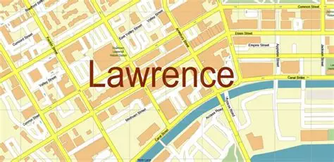

Downtown Lawrence comprises about 20 city blocks between South Park and the Kansas River. This area includes a county courthouse, an art center, a library, the city hall, offices, apartments, and two hotels. It also has many parking lots and attached shops and restaurants with roofs of similar height that could accommodate solar collectors.
East of downtown is an 80-block area called East Lawrence. The western half is residential with many small houses and a grade school. The eastern half is industrial, with manufacturing buildings, warehouses, a railroad station and tracks, open parking areas, a rock-crushing plant, and the city's sewage plant.
West of downtown is an 80-block area called Old West Lawrence. The southern two-thirds is residential and includes a grade school. The northern third has several medical facilities with large parking lots, and there is some industrial land by railroad tracks at the north end.
Southwest of Old West Lawrence is the University of Kansas (KU). Before switching to utility power around 1960, KU produced its own heat and electricity.